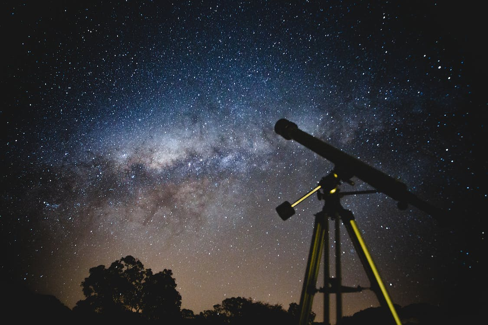
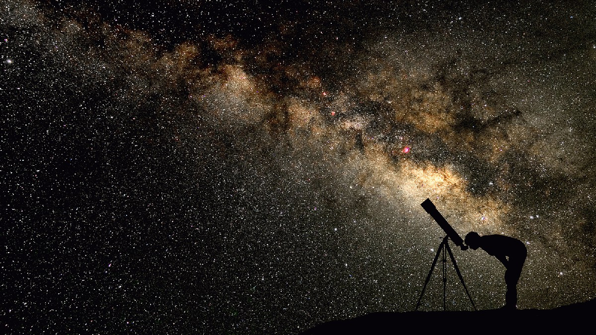
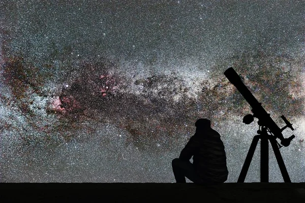
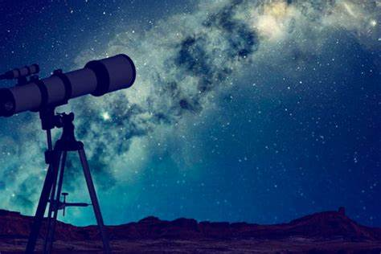
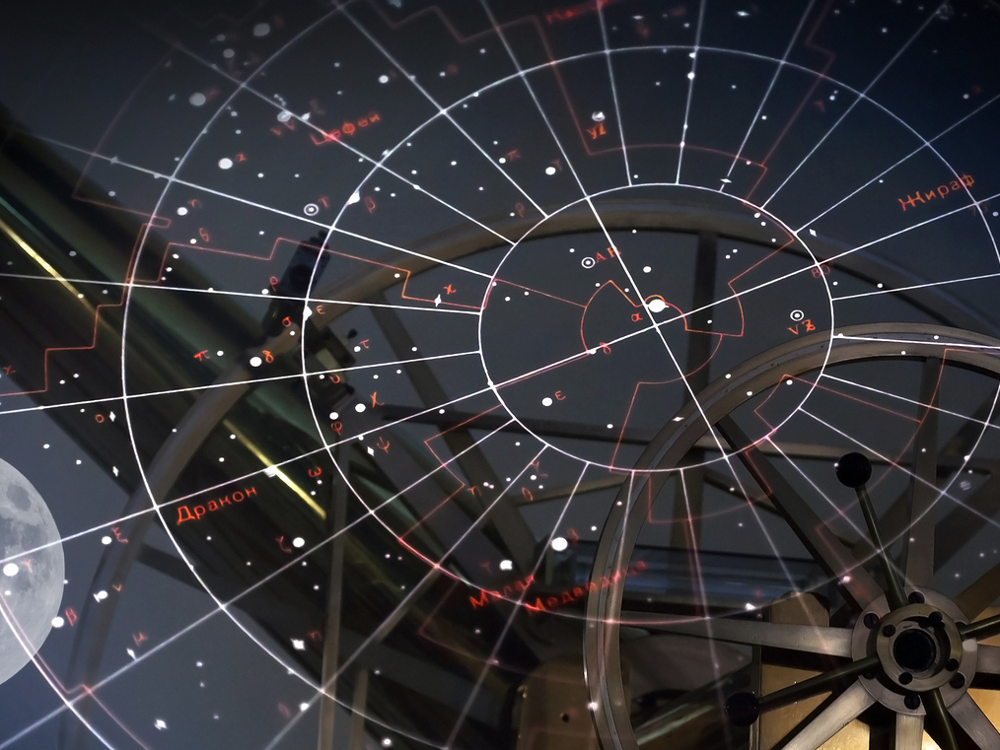

La astronomía es la ciencia que estudia el universo y los objetos que lo componen: planetas, satélites, cometas, asteroides, estrellas, nebulosas, galaxias, cuásares, púlsares, agujeros negros… La astronomía también estudia la formación de estos objetos, sus propiedades, sus movimientos y procura entender cómo interactúan entre ellos. En resumen, la astronomía busca la comprensión del universo.

Astronomía de posición
La astronomía de posición es una rama muy antigua de la astronomía que estudia el movimiento de los objetos a través de la esfera celeste. Se creó un sistema de coordenadas celestes y se dividió en zonas: los astrónomos agruparon las estrellas formando constelaciones, con el fin de realizar un mapa del cielo de referencia.

Astronomía observacional
La astronomía observacional es la rama de la astronomía que se encarga de recopilar datos del universo observable. Esta rama puede realizarse a simple vista, con telescopios o mediante otros instrumentos astronómicos. El equipo puede variar mucho dependiendo del fenómeno que se pretende observar.

Radioastronomía
La radioastronomía es una rama de la astronomía que estudia los objetos celestes en frecuencias de radio, es decir, estudia la radiación electromagnética que emiten. Las ondas de radio tienen una longitud de onda mayor que la luz visible. Por ello, se utilizan grandes antenas denominadas radiotelescopios.

Astronomía infrarroja
La astronomía infrarroja es la rama de la astronomía y la astrofísica que estudia los objetos astronómicos visibles en la radiación infrarroja (IR). Esta rama se inició en la década de 1830, unas décadas después de que William Herschell descubriera la luz infrarroja, en el año 1800.

Astronomía óptica
La astronomía óptica es la que utiliza instrumentos ópticos para observar los objetos celestes. Hans Lippershey fue el creador del primer telescopio, y desde entonces se han hecho modelos cada vez más potentes y sofisticados.